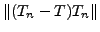
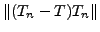

We will present a method for the computation of eigenpairs of Fredholm integral operators on a Banach space .
Let us consider an integral operator  and a sequence
of -approximations of
and a sequence
of -approximations of  obtained by projection
methods onto a finite dimensional subspace of , .
This kind of convergence, introduced by M. Ahues, A. Largillier and B.V.
Limaye, is defined by
being bounded, and both
and
 converging to 0.
The kernel of the Fredholm integral operators to be treated, may be weakly singular.
obtained by projection
methods onto a finite dimensional subspace of , .
This kind of convergence, introduced by M. Ahues, A. Largillier and B.V.
Limaye, is defined by
being bounded, and both
and
 converging to 0.
The kernel of the Fredholm integral operators to be treated, may be weakly singular.
The multipower double iteration consists of an inner/outer iteration
where, inside a defect correction iteration,  steps of a power
iteration are used.
The defect correction principle is based in describing the integral
problem under the form and using an approximate inverse of
steps of a power
iteration are used.
The defect correction principle is based in describing the integral
problem under the form and using an approximate inverse of  to solve it iteratively.
The approximate inverse here is based on an approximation to the reduced
resolvent operator of
to solve it iteratively.
The approximate inverse here is based on an approximation to the reduced
resolvent operator of  .
.
Numerical experiments with a transfer problem in Astrophysics are presented.
This problem deals with the emission of photons in stellar atmospheres that can be
modeled by a strongly coupled system of nonlinear equations.
We consider only a restriction of the system by taking the temperature
and pressure constant, thus yielding a simpler model describing the mean
intensity of radiation.
The integral operator  involved is
involved is
where is the average number of photons.
The variable  represents
the optical depth,
represents
the optical depth,
 is the optical thickness of a stellar
atmosphere, is in the resolvent set of
is the optical thickness of a stellar
atmosphere, is in the resolvent set of  and
is the albedo (assumed to be constant in the present work).
The first exponential-integral function defined by
,
has a logarithmic behavior in the neighborhood of the origin.
and
is the albedo (assumed to be constant in the present work).
The first exponential-integral function defined by
,
has a logarithmic behavior in the neighborhood of the origin.
To solve this problem we followed the numerical approach based on the projection of the integral operator onto a finite dimensional subspace. Without any loss of generality, we consider the Kantorovich method. The discretization of this problem by projection methods yields non symmetric sparse band matrices, and so appropriate date structures are used.
The numerical tests made with this new method show a considerable improvement over the classical double iteration rate of convergence. The performance of multipower double iteration is also compared successfully to the state-of-the-art methods applied to the discretised problem, namely Arnoldi and Jacobi-Davidson methods.
For instance, we compared the CPU time, for the computation
of the 3 largest eigenpairs, by Multipower, Arnoldi and Jacobi-Davidson methods,
the first took 22.6 seconds, the second 119.2 seconds and the third 107.1 seconds.
For the first method, a discretization involving a projecting finite
dimensional subspace of dimension was used to solve a matrix
eigenvalues problem,
for all of them the functions in were approximated by their
interpolants in , and the action of the operator  was
represented by the product by a matrix of order . The tolerence on
the residual taken was and the number of inner power
iterations .
was
represented by the product by a matrix of order . The tolerence on
the residual taken was and the number of inner power
iterations .
This Multipower method is well adapted to single precison fast performance of modern microprocessors, it is very performant for coarse error tolerances and competitive with the two mentioned state-of-the-art methods, especially when the number of eigenvalues to compute is small. For more eigenvalues the multipower method tends to be less competitive.